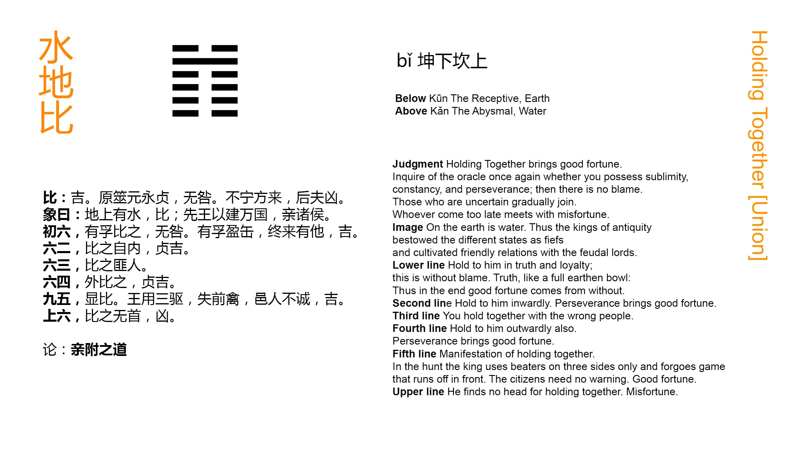

Chinese: 比 ䷇ bǐ

Bǐ ䷇ indicates that (under the conditions which it supposes) there is good fortune. But let (the principal party intended in it) re-examine himself, (as if) by divination, whether his virtue be great, unintermitting, and firm. If it be so, there will be no error. Those who have not rest will then come to him; and with those who are (too) late in coming it will be ill.
1. The first SIX, divided, shows its subject seeking by his sincerity to win the attachment of his object. There will be no error. Let (the breast) be full of sincerity as an earthenware vessel is of its contents, and it will in the end bring other advantages.
䷇ changing to ䷂
Matching Line 1 in Adjacent Hexagram: ䷆
2. In the second SIX, divided, we see the movement towards union and attachment proceeding from the inward (mind). With firm correctness there will be good fortune.
䷇ changing to ䷜
Matching Line 2 in Adjacent Hexagram: ䷆
3. In the third SIX, divided, we see its subject seeking for union with such as ought not to be associated with.
䷇ changing to ䷦
Matching Line 3 in Adjacent Hexagram: ䷆
4. In the fourth SIX, divided, we see its subject seeking for union with the one beyond himself. With firm correctness there will be good fortune.
䷇ changing to ䷬
Matching Line 4 in Adjacent Hexagram: ䷆
5. The fifth NINE, undivided, affords the most illustrious instance of seeking union and attachment. (We seem to see in it) the king urging his pursuit of the game (only) in three directions, and allowing the escape of all the animals before him, while the people of his towns do not warn one another (to prevent it). There will be good fortune.
䷇ changing to ䷁
Matching Line 5 in Adjacent Hexagram: ䷆
6. In the topmost SIX, divided, we see one seeking union and attachment without having taken the first step (to such an end). There will be evil.
䷇ changing to ䷓
Matching Line 6 in Adjacent Hexagram: ䷆
The idea of union between the different members and classes of a state, and how it can be secured, is the subject of the hexagram Bǐ ䷇. The whole line occupying the fifth place, or that of authority, in the hexagram, represents the ruler to whom the subjects of all the other lines offer a ready submission. According to the general rules for the symbolism of the lines, the second line is the correlate of the fifth; but all the other lines are here made subject to that fifth; -- which is also a law of the Yì Jīng, according to the 'Daily Lecture.' To me it has the suspicious look of being made for the occasion. The harmony of union, therefore, is to be secured by the sovereign authority of one; but he is warned to see to it that his virtue be what will beseem his place, and subjects are warned not to delay to submit to him.
Where does the 'sincerity' predicated of the subject of line 1 come from? The 'earthenware vessel' is supposed to indicate its plain, unadorned character; but there is nothing in the position and nature of the line, beyond the general idea in the figure, to Suggest the attribute.
Line 2 is the proper correlate of 5. Its position in the centre of the inner or lower trigram agrees with the movement of its subject as proceeding from the inward mind.
Line 3 is weak, not in the centre, nor in its correct place. The lines above and below it are both weak. All these things are supposed to account for what is said on it.
'The one beyond himself' in line 4 is the ruler or king, who is p. 76 the subject of 5, and with whom union ought to be sought. The divided line, moreover, is in a place proper to it. If its subject be firm and correct, there will be good fortune.
The subject of line 5 is the king, who must be the centre of union. The ancient kings had their great hunting expeditions in the different seasons; and that of each season had its peculiar rules. But what is stated here was common to all. When the beating was completed, and the shooting was ready to commence, one side of the enclosure into which the game had been driven was left open and unguarded; -- a proof of the royal benevolence, which did not want to make an end of all the game. So well known and understood is this benevolence of the model king of the hexagram, that all his people try to give it effect. Thus the union contemplated is shown to be characterised by mutual confidence and appreciation in virtue and benevolence.
A weak line being in the 6th place, which is appropriate to it, its subject is supposed to be trying to promote union among and with the subjects of the lines below. It is too late. The time is past. Hence it is symbolised as 'without a head,' that is, as not having taken the first step, from which its action should begin, and go on to the end.